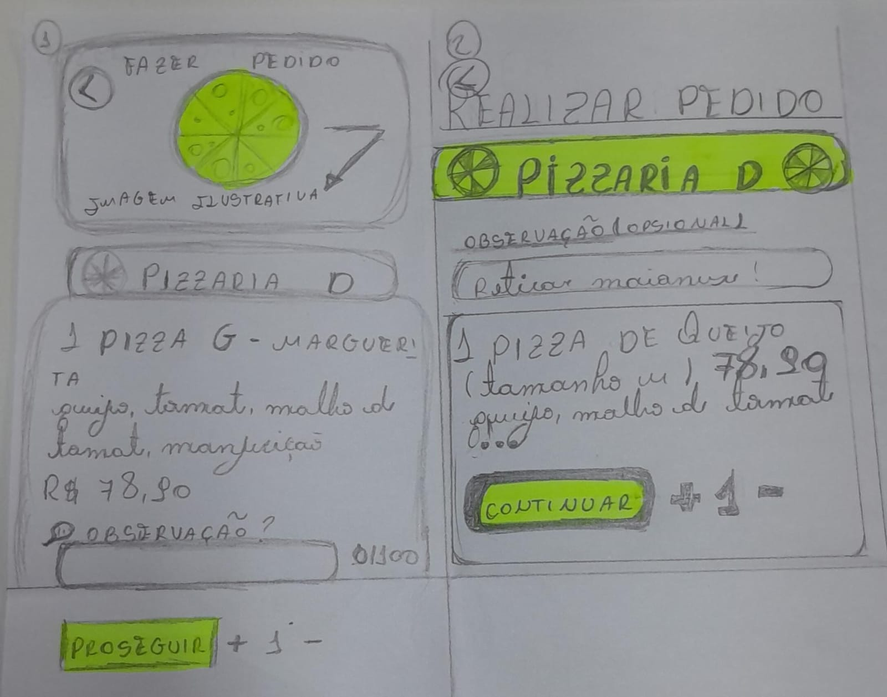

Facilite a gestão do seu restaurante, simplifique o seu dia a dia.
Um sistema pensado para organizar pedidos, gerenciamento geral e entregas de forma simples.
Este projeto de sistema de gerenciamento de restaurante foi desenvolvido com foco em usabilidade e experiência do usuário. A ideia é apoiar restaurantes, lanchonetes e negócios de alimentação no controle do fluxo diário: pedidos e entrega deixando o trabalho mais leve e organizado.
Como trabalhamos
Principais pilares do sistema.
Organização
Pedidos e entregas em um único lugar, com visão clara do andamento.
Simplicidade
Telas diretas e linguagem simples, pensadas para o dia a dia da operação.
Acompanhamento
Resumo do movimento do dia para apoiar decisões e melhorias no serviço.
Vídeo
Uma visão geral do projeto em funcionamento.
Processo
Etapas que ajudaram a tirar a ideia do papel.
Objetivos
Identificação das dores de restaurantes reais e definição do escopo do sistema.
Mapa
Mapeamento do fluxo de pedidos, da chegada do cliente até o fechamento da conta.

Storyboard
Construção de cenários de uso e telas-chave para testar a navegação e a usabilidade.
Nosso Time
Maria Santos

Kauana Beatriz

Thais Souza
Evellyn Cipriano
Matheus Hideki